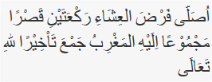
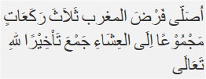

Solat Jama Qosor
Solat Jama Qosor
Berniat menjamak qasar salat isya dengan jamak ta’khir. Jika dilafalkan sebagai berikut:  ”Ushalli fardhal 'isyaai raka'ataini qashran majmuu'an 'ilaihil maghribu jam'a ta'khiiran lillaahi-ta'aala” Artinya: “Saya (niat) shalat fardhu isya dua rakaat, qashar, dengan menjamak maghrib kepadanya, karena Allah Ta'ala” Berdiri dan niat salat magrib. Jika dilafalkan sebagai berikut:  ”Ushalli fardhal maghribi tsalasa raka'aatin majmuu'an 'ilal 'isyaai jam'a ta'khiiran lillaahi-ta'aala” Artinya: “Saya (niat) shalat fardhu maghrib tiga rakaat, dengan menjamaknya kepada isya, karena Allah Ta'ala”
Jama' Qosor Ta'khir
Cara Melaksanakan Shalat Jamak Qashar Ta'khir, Maghrib dengan Isya'